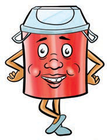
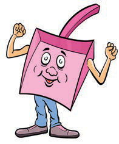

Maswali
1. Taja majina ya vifaa vya kutunzia mazingira ulivyoviona katika picha a-p.
2. Je, ni vifaa gani vingine vya kutunzia mazingira unavyovifahamu?
Shughuli ya pili
Angalia vikaragosi vifuatavyo, kisha fanya majigambo ya vifaa vya kutunzia mazingira kwa kutaja matumizi yake.
Mimi ni pipa la takataka, ninahifadhi takataka.

Mimi ni kizoleo, ninabeba takataka na kuzipeleka kwenye pipa la takataka.
